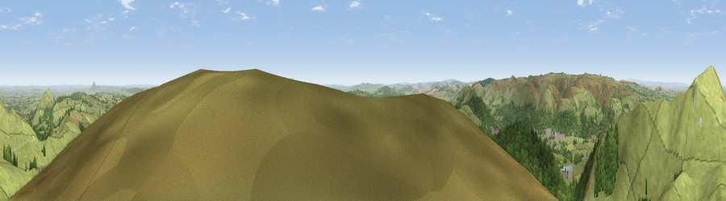

Hope Bowdler Hill
#1259 in England · top 3% of its area beats it · near Hope BowdlerWhere it is
The exact computed spot (SO 47925 94050). Click the marker for map links.
The view, rendered

A 360° render of this exact spot computed from the terrain model, tree cover and land cover — summer colours, afternoon light, calibrated against photographs of famous viewpoints. Real trees, hedges and buildings will differ in detail.
The panorama
Grey silhouette: terrain skyline in each direction (720 bearings, Earth curvature and refraction included). Dashed green: skyline with trees (+15 m) and buildings (+8 m) as obstacles. Blue strip: how far the ground is visible on each bearing.
Where the view opens
Wedge length = distance to the farthest visible ground on that bearing (vegetation-aware). Rings at 10, 25 and 50 km.
What fills the view
71% grassland · 21% woodland · 7% cropland ·
Angular shares of the visible panorama (visual magnitude), not map area. Landscape diversity 0.35 (0–1 Shannon).
Key numbers
More beautiful places nearby
The staircase of upgrades: each row has a higher view potential than everything closer. Driving times are estimates from straight-line distance, calibrated against real road routing — check an actual route before setting out.
| Place | Direction | Drive | Score |
|---|---|---|---|
| Caer Caradoc Hill | N · 1 km | ~4 min | 81.7 |
| The Lawley | NNE · 4 km | ~9 min | 85.8 |
| Viewpoint near Little Wenlock | NE · 20 km | ~34 min | 86.6 |
| North Hill | SSE · 56 km | ~78 min | 86.8 |
| Worcestershire Beacon | SSE · 57 km | ~79 min | 87.1 |
| Viewpoint near Bossington | SSW · 156 km | ~178 min | 88.3 |
| Selworthy Beacon | SSW · 156 km | ~179 min | 88.7 |
| Holdstone Hill | SSW · 170 km | ~191 min | 90.2 |
52.54180, -2.76927 · source: osm peak · position refined by local search. Computed location — check access rights before visiting.